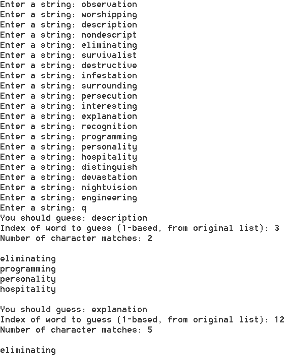

Java API
Keyboard documentation
matrix package "external" documentation
In this lab, you will practice creating/instantiating objects and passing messages to them. Four short, unrelated exercises will review basic programming concepts (conditionals and loops) and provide substantial practice in using objects. You will also become familiar with using the javadoc external documentation format, which will be a very valuable skill this semester.
Lab:
Part I: Solving simultaneous equations using the matrix package
Download the following file:
package matrix
Consider the following set of equations:
1.6x1 + 2.4x2 - 3.7x3 = -22.10
17.6x1 - 5.6x2 + 0.05x3 = -4.35
-2x1 + 2x2 + 25.3x3 = 233.70
These equations can be represented in matrix form as Ax = b where A is a 3x3 matrix of the coefficients, x is a 3x1 matrix of the unknown values, and b is a 3x1 matrix of the right hand sides (RHS). This matrix equation can be inverted to solve for the unknowns, x = A-1b.
Use the matrix package (in the jar file, don't extract the files) and the associated external documentation to solve the above system of equations. You will need to use the import statement and -classpath (or -cp) to compile and run so that you can access the classes in the jar file. You may want to consider using a batch file to speed up compiling and running with a custom classpath.
Declare your matrix variables to be type MatrixOperationsInterface.
Call your driver Equations.java.
Part II: Computing the percentage of times that craps is rolled
Download the following files:
Roll the dice 752 times and report the percentage of times that a 2, 3, or 12 is rolled (one number).
You will need to cast to a double to get the correct percentage (or you will be performing integer division).
Call your driver class Craps.java and include the following static method:
Part III: Using Strings to hack computers in Fallout 3
Download the following files:
In Fallout 3, sometimes it is necessary to hack computers. When hacking is attempted (assuming your science skill is high enough to even attempt the hack), you are given a list of possible passwords. Each time you try a password from the list, either it is the correct password and you are granted access to the computer, or you are told how many characters in the attempted word match characters in the actual password. The character and its position in the actual password must match. By a process of elimination, it is then possible to determine the actual password. You have 4 tries to determine the correct password.
Allow the user to enter possible passwords (Strings) from the Keyboard (refer to the Java API for the String class public interface, look for the "equals" method). The user will enter "q" when they are done entering possible passwords. Next, they will enter which word that they tried as the password, and the number of character matches reported by Fallout 3. The updated list of possible passwords is displayed, and the user is then able to guess another password from this updated list. If only one password remains, the program terminates. Your program should be able to handle special cases (i.e. entering "q" right away).
Call your driver class PasswordDriver.java. Include the following static methods:

Part IV: Using a priority queue to sort CDs (heap sort)
Download the following file:
Suppose you want to sort a set of CDs (by title). One possible way to do this is to use a priority queue. The "Java Collections Framework" includes a priority queue (refer to the Java API for the public interface and look for "offer" and "poll"). You will need to import this class (java.util.PriorityQueue). Use this priority queue to sort the CDs listed below. That is, put all of the CDs into the priority queue, and then pull them out, calling the toString() method on each CD as it comes off of the priority queue. As the priority queue is implemented with a heap, you are performing heap sort. Is this sort stable? How can you tell?
Call your driver PQDriver.java and include the following static methods:
Add the following CDs to the priority queue in the given order (you can copy and paste this code into your main method):
insertCD(pq, createCD("The Gallery", "Dark Tranquillity"));
insertCD(pq, createCD("Since the Day It All Came Down", "Insomnium"));
insertCD(pq, createCD("If Emotions Still Burn", "Ablaze My Sorrow"));
insertCD(pq, createCD("Swamplord", "Kalmah"));
insertCD(pq, createCD("Towards the Twilight", "Night in Gales"));
insertCD(pq, createCD("An Epic Defiance", "Detonation"));
insertCD(pq, createCD("From Your Grave", "The Absence"));
insertCD(pq, createCD("Inhumanity", "Mors Principium Est"));
insertCD(pq, new CD("The Gallery", "Dark Tranquillity", 13.99, 11)); //a "duplicate" with a different value and tracks
insertCD(pq, createCD("Timeless Departure", "Skyfire"));
insertCD(pq, createCD("Spirits and August Light", "Omnium Gatherum"));
insertCD(pq, createCD("Slaughter of the Soul", "At the Gates"));
insertCD(pq, createCD("Shadows and Dust", "Kataklysm"));
insertCD(pq, createCD("Fate of Norns", "Amon Amarth"));
insertCD(pq, createCD("Corroding From Inside", "Searing Meadow"));
insertCD(pq, createCD("The Glorious Burden", "Iced Earth"));
insertCD(pq, createCD("Stained", "Imperanon"));
insertCD(pq, createCD("As Night Conquers Day", "Autumn Leaves"));